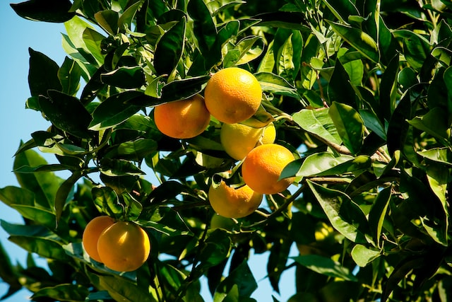

Our History
Bountiful Foods began when farmer Jose Gomez met farmer's market enthusiast Annie McDougall. Noticing a gap in the market, they worked together to start a company that made fresh and local fruits not only more accessible, but also more exciting. With a passion for health, Annie set out to make delectable and healthy fruit drinks, and Jose worked with his fellow farmers to create a wonderful environment for local growers. Almost 20 years later, the company has grown from a small single food truck to multiple food trucks, as well as a main storefront. Along with providing local fruits to the California population, Bountiful Foods works hard to support local farmers and make organic fruits more accessible.
About Us

Our mission is to provide fresh and healthy food options, including organic, made to order, fruit drinks and fruit bags, to locals and to tourists visiting the California coast. We're a company dedicated to providing fresh, local, and organic fruits to all who visit. With locations all around California (and a main storefront in Carlsbad), we try to make healthy eating something accessible and exciting. We can deliver and manage fruit orders on the phone and here on the website.
Locations
Use the map below to find our current foodtruck locations.
Contact Us
Phone
(760) 555-5555
info@bountifulfoods.com